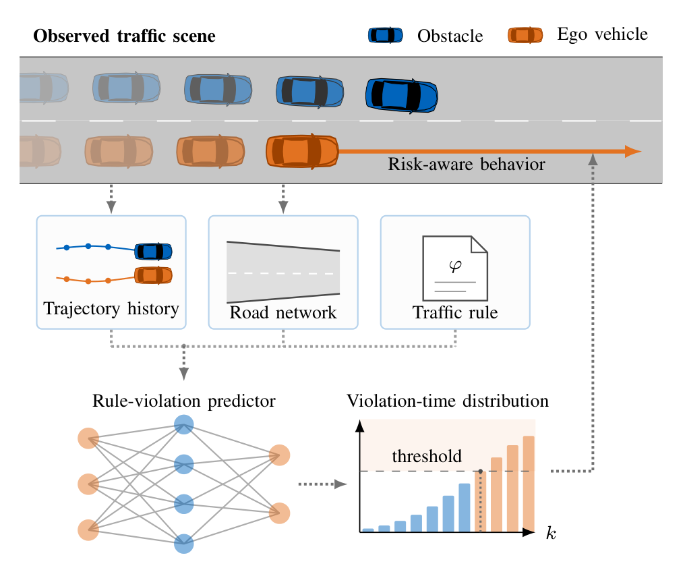
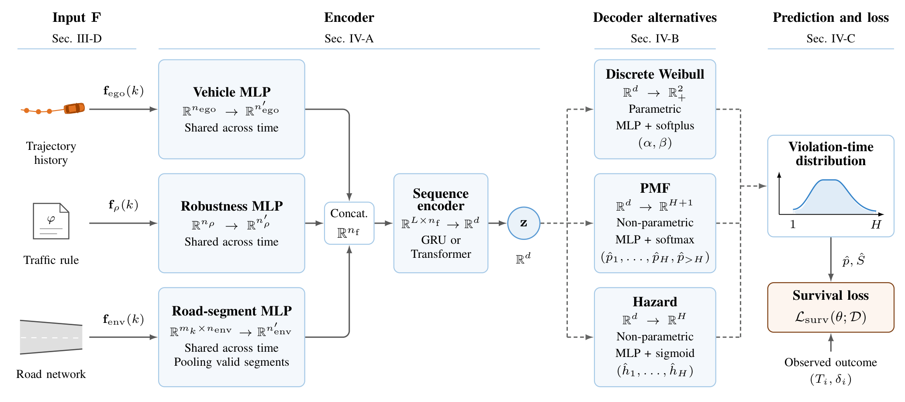
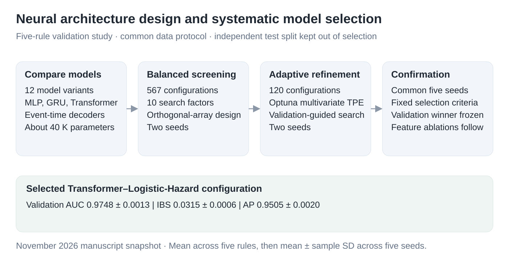
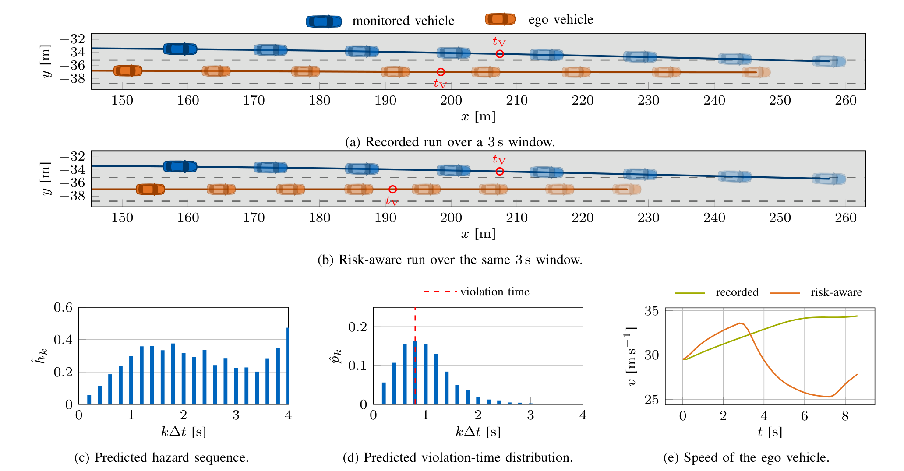

Method at a glance
How it works
- 01Extract historiesVehicle states, rule robustness, and road geometry.
- 02Encode contextSeparate feature groups and road-network encoding.
- 03Predict event timeTransformer plus logistic-hazard decoder.
- 04ValidateCensored-data metrics, five seeds, and feature ablations.
Project workflow schematic.
Forthcoming paper
Predictive Monitoring of Traffic Rules Using Survival Analysis — a forthcoming coauthored paper on predicting when surrounding vehicles may violate traffic rules. The selected figures below show the method, neural architecture and a highway driving example.


Predict time, not only a violation label
A safety monitor can check whether a traffic rule is already violated. Prediction asks a different question: given the recent motion and scene, when is a violation likely to happen? Event-time modeling also needs to account for censored examples, where no violation is observed within the available interval.
This work is part of my TUM CPS HiWi role and complements the CommonRoad agentic-planning project. The neural predictor and the numerical execution checks are distinct components; this page does not imply that every experiment is already integrated into the driving agent.
My contribution
- Designed and refined the neural-network architecture, from grouped vehicle, rule-robustness and road-context encoders to temporal modeling and event-time decoding.
- Implemented and tested model variants, and compared MLP, GRU and Transformer encoders with Weibull, PMF, DRSA and logistic-hazard alternatives under a shared evaluation protocol.
- Designed and ran the hyperparameter-search workflow: balanced orthogonal-array screening, Optuna TPE refinement and confirmation across common random seeds.
- Analyzed controlled feature ablations, checkpoint inventories and metric comparisons to explain which inputs and architectural choices supported prediction quality.
Transformer and logistic-hazard model
The model groups the time-varying inputs by their meaning: logical robustness features and vehicle dynamics are encoded with their respective branches, while road segments supply environmental context. A sequence Transformer aggregates the observation history, and a logistic-hazard decoder predicts discrete event-time hazards.
The retained configuration uses an observation history of up to 32 steps, a 64-dimensional Transformer representation, two attention heads, and a road-network encoder. These describe one selected experimental configuration, rather than a universal architecture claim.


Architecture comparison before tuning
The retained manuscript compares twelve encoder–decoder/objective combinations on five traffic rules and five random seeds. Parameter budgets are kept close to 40 K, so the comparison examines representation and event-time modeling rather than simply increasing network size.
Transformer–Logistic-Hazard has the lowest combined validation rank in that comparison. Transformer–Weibull is close, and other variants lead individual metrics. I therefore compare discrimination, calibration and event-horizon precision together instead of choosing a network from one favorable score.
| Representative model | Mean validation AUC | Mean validation IBS | Combined rank |
|---|---|---|---|
| MLP + Logistic-Hazard | 0.9643 | 0.0452 | 6.36 |
| GRU + Logistic-Hazard | 0.9644 | 0.0450 | 5.51 |
| Transformer + Weibull | 0.9640 | 0.0441 | 4.67 |
| Transformer + Logistic-Hazard | 0.9666 | 0.0439 | 4.60 |
From architecture selection to hyperparameter search
After architecture selection, I searched ten factors covering optimization, regularization, the feature encoders, fusion width, Transformer capacity, attention heads and decoder width. The retained search record uses 567 orthogonal-array configurations for balanced screening and 120 additional Optuna TPE configurations for adaptive refinement.
Screening and refinement use two seeds; the shortlists proceed to confirmation with five common seeds. Checkpoint and configuration selection use validation data, with the independent test split kept out of the search. The selected settings are then held fixed for feature ablations.
The November manuscript snapshot reports a mean validation AUC of 0.9748 ± 0.0013, integrated Brier score of 0.0315 ± 0.0006 and average precision of 0.9505 ± 0.0020 for the selected configuration. Each seed is first averaged across the five rules; the reported variation is the sample standard deviation across the five seeds. These are validation results after tuning.


Data and validation
The broader workflow uses highD, inD, and MONA traffic data. Temporal histories and traffic-rule robustness features are prepared for event prediction; data-source and rule-specific configurations determine the concrete split and endpoint.
The retained ablation study fixes a selected model configuration and compares six rules under nine feature settings and five common seeds. All 270 selected checkpoints are indexed. AUC, integrated Brier score, and rule-aware average precision are used to inspect discrimination and time-dependent prediction quality.
What the feature study supports
In the fixed validation setup, the complete input achieved the highest overall mean composite score. Removing both logical-robustness feature groups produced the largest aggregate loss. This supports the value of rule-related history in that experiment; it does not establish a statistically significant winner for every individual rule.
The study reports seed variation and paired differences. The reported checkpoints and rankings are validation-based, and no independent test evaluation is claimed.
From predicted risk to driving response
The coauthored paper also studies how predicted rule-violation risk can inform a driving response. In the highway cut-in example, the predictor estimates the future violation-time distribution and a risk-aware planner decelerates before the unsafe maneuver. The plots compare this replanned response with the recorded run.


Related resources
- CommonRoadScenario, vehicle, and traffic-rule ecosystem.
Selected original figures from our forthcoming coauthored paper, Predictive Monitoring of Traffic Rules Using Survival Analysis (Wang, Gressenbuch, Huang, Lin and Althoff). Project details were also checked against the retained model factories, Transformer implementation, architecture comparison, hyperparameter search and feature-ablation records. The five-rule model/search study and six-rule ablation study have separate scopes; the model-selection results above are validation-based.